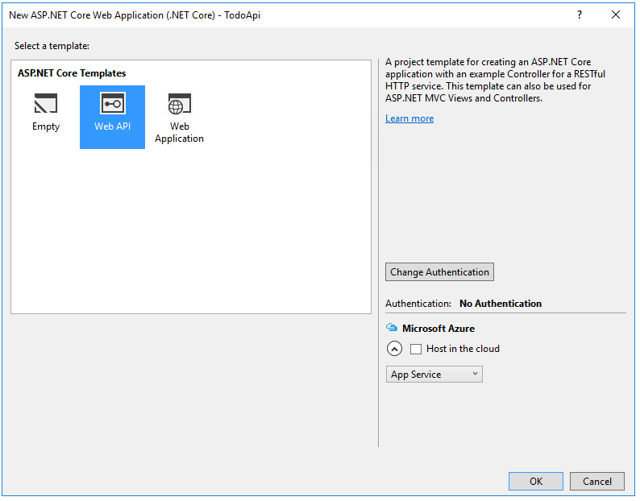
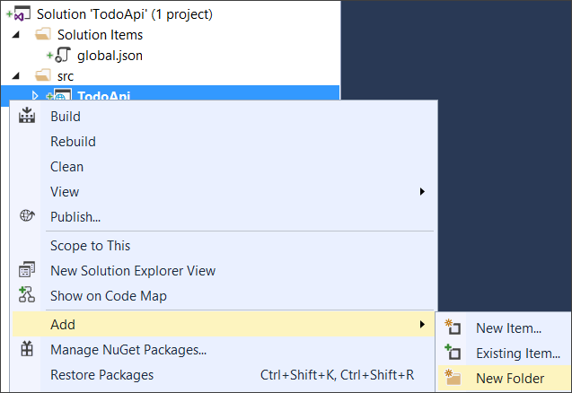
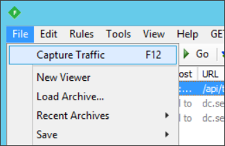
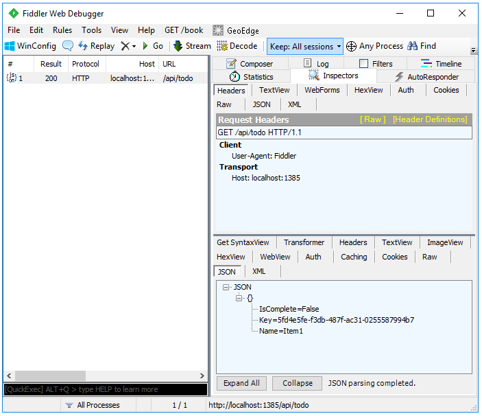
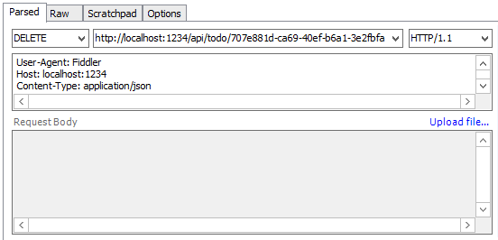

Building Your First Web API with ASP.NET Core MVC and Visual Studio¶
By Mike Wasson and Rick Anderson
HTTP is not just for serving up web pages. It’s also a powerful platform for building APIs that expose services and data. HTTP is simple, flexible, and ubiquitous. Almost any platform that you can think of has an HTTP library, so HTTP services can reach a broad range of clients, including browsers, mobile devices, and traditional desktop apps.
In this tutorial, you’ll build a simple web API for managing a list of “to-do” items. You won’t build any UI in this tutorial.
ASP.NET Core has built-in support for MVC building Web APIs. Unifying the two frameworks makes it simpler to build apps that include both UI (HTML) and APIs, because now they share the same code base and pipeline.
Note
If you are porting an existing Web API app to ASP.NET Core, see Migrating from ASP.NET Web API
Sections:
Overview¶
Here is the API that you’ll create:
| API | Description | Request body | Response body |
|---|---|---|---|
| GET /api/todo | Get all to-do items | None | Array of to-do items |
| GET /api/todo/{id} | Get an item by ID | None | To-do item |
| POST /api/todo | Add a new item | To-do item | To-do item |
| PUT /api/todo/{id} | Update an existing item | To-do item | None |
| DELETE /api/todo/{id} | Delete an item. | None | None |
The following diagram show the basic design of the app.

- The client is whatever consumes the web API (browser, mobile app, and so forth). We aren’t writing a client in this tutorial.
- A model is an object that represents the data in your application. In this case, the only model is a to-do item. Models are represented as simple C# classes (POCOs).
- A controller is an object that handles HTTP requests and creates the HTTP response. This app will have a single controller.
- To keep the tutorial simple the app doesn’t use a database. Instead, it just keeps to-do items in memory. But we’ll still include a (trivial) data access layer, to illustrate the separation between the web API and the data layer. For a tutorial that uses a database, see Building your first ASP.NET Core MVC app with Visual Studio.
Install Fiddler¶
We’re not building a client, we’ll use Fiddler to test the API. Fiddler is a web debugging tool that lets you compose HTTP requests and view the raw HTTP responses.
Create the project¶
Start Visual Studio. From the File menu, select New > Project.
Select the ASP.NET Core Web Application project template. Name the project TodoApi and tap OK.
In the New ASP.NET Core Web Application (.NET Core) - TodoApi dialog, select the Web API template. Tap OK.
Add a model class¶
A model is an object that represents the data in your application. In this case, the only model is a to-do item.
Add a folder named “Models”. In Solution Explorer, right-click the project. Select Add > New Folder. Name the folder Models.
Note
You can put model classes anywhere in your project, but the Models folder is used by convention.
Next, add a TodoItem class. Right-click the Models folder and select Add > New Item.
In the Add New Item dialog, select the Class template. Name the class TodoItem and click OK.
Replace the generated code with:
namespace TodoApi.Models
{
public class TodoItem
{
public string Key { get; set; }
public string Name { get; set; }
public bool IsComplete { get; set; }
}
}
Add a repository class¶
A repository is an object that encapsulates the data layer, and contains logic for retrieving data and mapping it to an entity model. Even though the example app doesn’t use a database, it’s useful to see how you can inject a repository into your controllers. Create the repository code in the Models folder.
Start by defining a repository interface named ITodoRepository. Use the class template (Add New Item > Class).
using System.Collections.Generic;
namespace TodoApi.Models
{
public interface ITodoRepository
{
void Add(TodoItem item);
IEnumerable<TodoItem> GetAll();
TodoItem Find(string key);
TodoItem Remove(string key);
void Update(TodoItem item);
}
}
This interface defines basic CRUD operations.
Next, add a TodoRepository class that implements ITodoRepository:
using System;
using System.Collections.Generic;
using System.Collections.Concurrent;
namespace TodoApi.Models
{
public class TodoRepository : ITodoRepository
{
static ConcurrentDictionary<string, TodoItem> _todos =
new ConcurrentDictionary<string, TodoItem>();
public TodoRepository()
{
Add(new TodoItem { Name = "Item1" });
}
public IEnumerable<TodoItem> GetAll()
{
return _todos.Values;
}
public void Add(TodoItem item)
{
item.Key = Guid.NewGuid().ToString();
_todos[item.Key] = item;
}
public TodoItem Find(string key)
{
TodoItem item;
_todos.TryGetValue(key, out item);
return item;
}
public TodoItem Remove(string key)
{
TodoItem item;
_todos.TryGetValue(key, out item);
_todos.TryRemove(key, out item);
return item;
}
public void Update(TodoItem item)
{
_todos[item.Key] = item;
}
}
}
Build the app to verify you don’t have any compiler errors.
Register the repository¶
By defining a repository interface, we can decouple the repository class from the MVC controller that uses it. Instead of instantiating a TodoRepository inside the controller we will inject an ITodoRepository the built-in support in ASP.NET Core for dependency injection.
This approach makes it easier to unit test your controllers. Unit tests should inject a mock or stub version of ITodoRepository. That way, the test narrowly targets the controller logic and not the data access layer.
In order to inject the repository into the controller, we need to register it with the DI container. Open the Startup.cs file. Add the following using directive:
using TodoApi.Models;
In the ConfigureServices method, add the highlighted code:
public void ConfigureServices(IServiceCollection services)
{
// Add framework services.
services.AddMvc();
// Add our repository type
services.AddSingleton<ITodoRepository, TodoRepository>();
}
Add a controller¶
In Solution Explorer, right-click the Controllers folder. Select Add > New Item. In the Add New Item dialog, select the Web API Controller Class template. Name the class TodoController.
Replace the generated code with the following:
using System.Collections.Generic;
using Microsoft.AspNetCore.Mvc;
using TodoApi.Models;
namespace TodoApi.Controllers
{
[Route("api/[controller]")]
public class TodoController : Controller
{
public TodoController(ITodoRepository todoItems)
{
TodoItems = todoItems;
}
public ITodoRepository TodoItems { get; set; }
}
}
This defines an empty controller class. In the next sections, we’ll add methods to implement the API.
Getting to-do items¶
To get to-do items, add the following methods to the TodoController class.
public IEnumerable<TodoItem> GetAll()
{
return TodoItems.GetAll();
}
[HttpGet("{id}", Name = "GetTodo")]
public IActionResult GetById(string id)
{
var item = TodoItems.Find(id);
if (item == null)
{
return NotFound();
}
return new ObjectResult(item);
}
These methods implement the two GET methods:
GET /api/todoGET /api/todo/{id}
Here is an example HTTP response for the GetAll method:
HTTP/1.1 200 OK
Content-Type: application/json; charset=utf-8
Server: Microsoft-IIS/10.0
Date: Thu, 18 Jun 2015 20:51:10 GMT
Content-Length: 82
[{"Key":"4f67d7c5-a2a9-4aae-b030-16003dd829ae","Name":"Item1","IsComplete":false}]
Later in the tutorial I’ll show how you can view the HTTP response using the Fiddler tool.
Routing and URL paths¶
The [HttpGet] attribute specifies that these are HTTP GET methods. The URL path for each method is constructed as follows:
- Take the template string in the controller’s route attribute,
[Route("api/[controller]")] - Replace “[Controller]” with the name of the controller, which is the controller class name minus the “Controller” suffix. For this sample the name of the controller is “todo” (case insensitive). For this sample, the controller class name is TodoController and the root name is “todo”. ASP.NET MVC Core is not case sensitive.
- If the
[HttpGet]attribute also has a template string, append that to the path. This sample doesn’t use a template string.
For the GetById method, “{id}” is a placeholder variable. In the actual HTTP request, the client will use the ID of the todo item. At runtime, when MVC invokes GetById, it assigns the value of “{id}” in the URL the method’s id parameter.
Change the launch URL to “api/todo”¶
- Right click on the project > Properties
- Select the Debug tab and change the Launch URL to “api/todo”
To learn more about request routing see 🔧 Routing to Controller Actions.
Return values¶
The GetAll method returns a CLR object. MVC automatically serializes the object to JSON and writes the JSON into the body of the response message. The response code for this method is 200, assuming there are no unhandled exceptions. (Unhandled exceptions are translated into 5xx errors.)
In contrast, the GetById method returns the more general IActionResult type, which represents a generic result type. That’s because GetById has two different return types:
- If no item matches the requested ID, the method returns a 404 error. This is done by returning
NotFound. - Otherwise, the method returns 200 with a JSON response body. This is done by returning an ObjectResult.
Use Fiddler to call the API¶
This step is optional, but it’s useful to see the raw HTTP responses from the web API.
In Visual Studio, press ^F5 to launch the app. Visual Studio launches a browser and navigates to http://localhost:port/api/todo, where port is a randomly chosen port number. If you’re using Chrome, Edge or Firefox, the todo data will be displayed. If you’re using IE, IE will prompt to you open or save the todo.json file.
Launch Fiddler. From the File menu, uncheck the Capture Traffic option. This turns off capturing HTTP traffic.
Select the Composer page. In the Parsed tab, type http://localhost:port/api/todo, where port is the port number. Click Execute to send the request.
The result appears in the sessions list. The response code should be 200. Use the Inspectors tab to view the content of the response, including the response body.
Implement the other CRUD operations¶
The last step is to add Create, Update, and Delete methods to the controller. These methods are variations on a theme, so I’ll just show the code and highlight the main differences.
Create¶
[HttpPost]
public IActionResult Create([FromBody] TodoItem item)
{
if (item == null)
{
return BadRequest();
}
TodoItems.Add(item);
return CreatedAtRoute("GetTodo", new { controller = "Todo", id = item.Key }, item);
}
This is an HTTP POST method, indicated by the [HttpPost] attribute. The [FromBody] attribute tells MVC to get the value of the to-do item from the body of the HTTP request.
The CreatedAtRoute method returns a 201 response, which is the standard response for an HTTP POST method that creates a new resource on the server. CreateAtRoute also adds a Location header to the response. The Location header specifies the URI of the newly created to-do item. See 10.2.2 201 Created.
We can use Fiddler to send a Create request:
- In the Composer page, select POST from the drop-down.
- In the request headers text box, add
Content-Type: application/json, which is aContent-Typeheader with the valueapplication/json. Fiddler automatically adds the Content-Length header. - In the request body text box, enter the following:
{"Name":"<your to-do item>"} - Click Execute.
Here is an example HTTP session. Use the Raw tab to see the session data in this format.
Request:
POST http://localhost:29359/api/todo HTTP/1.1
User-Agent: Fiddler
Host: localhost:29359
Content-Type: application/json
Content-Length: 33
{"Name":"Alphabetize paperclips"}
Response:
HTTP/1.1 201 Created
Content-Type: application/json; charset=utf-8
Location: http://localhost:29359/api/Todo/8fa2154d-f862-41f8-a5e5-a9a3faba0233
Server: Microsoft-IIS/10.0
Date: Thu, 18 Jun 2015 20:51:55 GMT
Content-Length: 97
{"Key":"8fa2154d-f862-41f8-a5e5-a9a3faba0233","Name":"Alphabetize paperclips","IsComplete":false}
Update¶
[HttpPut("{id}")]
public IActionResult Update(string id, [FromBody] TodoItem item)
{
if (item == null || item.Key != id)
{
return BadRequest();
}
var todo = TodoItems.Find(id);
if (todo == null)
{
return NotFound();
}
TodoItems.Update(item);
return new NoContentResult();
}
Update is similar to Create, but uses HTTP PUT. The response is 204 (No Content).
According to the HTTP spec, a PUT request requires the client to send the entire updated entity, not just the deltas. To support partial updates, use HTTP PATCH.
Delete¶
[HttpDelete("{id}")]
public void Delete(string id)
{
TodoItems.Remove(id);
}
The void return type returns a 204 (No Content) response. That means the client receives a 204 even if the item has already been deleted, or never existed. There are two ways to think about a request to delete a non-existent resource:
- “Delete” means “delete an existing item”, and the item doesn’t exist, so return 404.
- “Delete” means “ensure the item is not in the collection.” The item is already not in the collection, so return a 204.
Either approach is reasonable. If you return 404, the client will need to handle that case.
Next steps¶
- To learn about creating a backend for a native mobile app, see 🔧 Creating Backend Services for Native Mobile Applications.
- For information about deploying your API, see Publishing and Deployment.
- View or download sample code